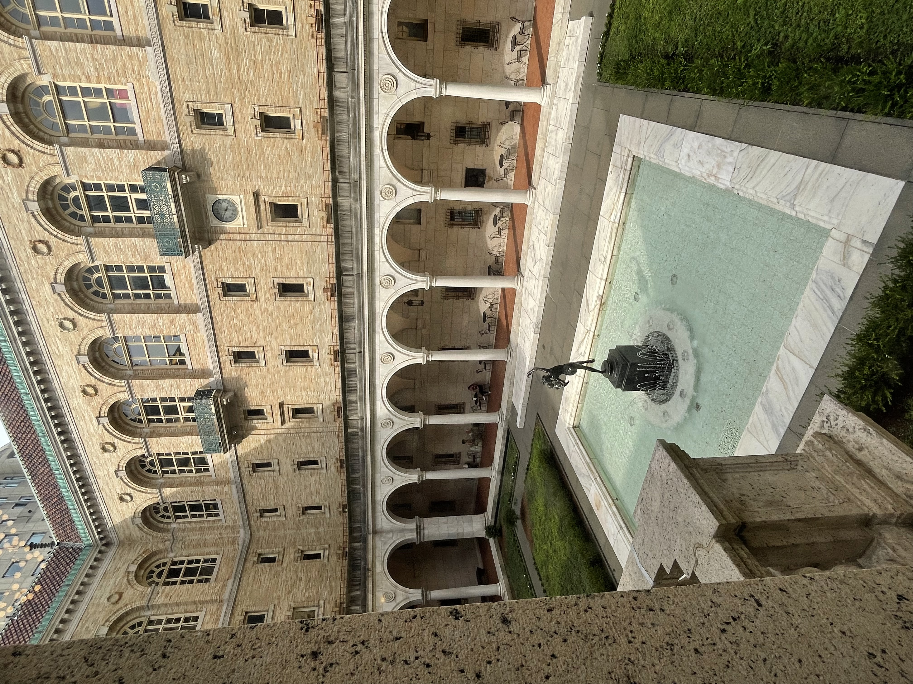

LOG_UNAVAILABLE
K E N O P S I A
/kɛˈnɒpsiə/

Definition
The eerie, forlorn atmosphere of a place that is usually bustling with people but is now abandoned and quiet.
It is the emotional afterimage of a space that has been emptied of its purpose.
Offline Resource
"The silence was the most terrible, dreadful thing. It was not the silence of sleep, nor even the silence of death—it was the silence of an empty stage after the play has ended and the audience has gone home. The air felt thin and used-up, as if the oxygen had been breathed by a thousand lungs and never replaced. The clocks had stopped, and the very light in the terminal seemed to be fading, losing its grip on the fragile, decaying edges of the world."
Quote
"There is a certain kind of beauty in a place that has been left behind, a quiet dignity in the decay." — Unknown